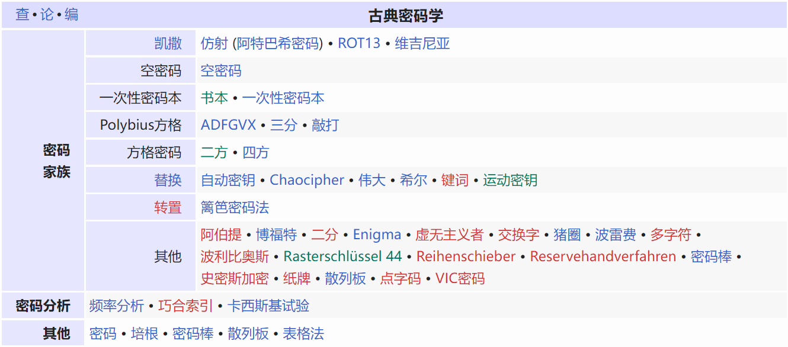
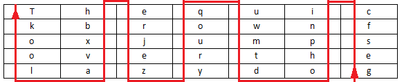
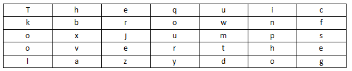
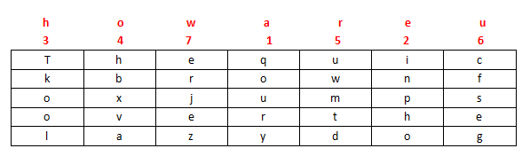
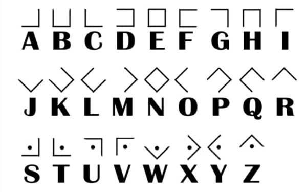
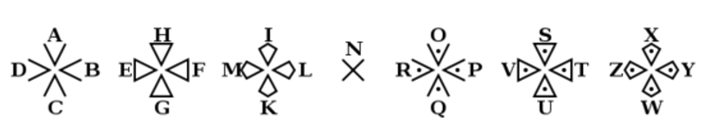
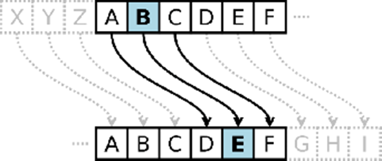
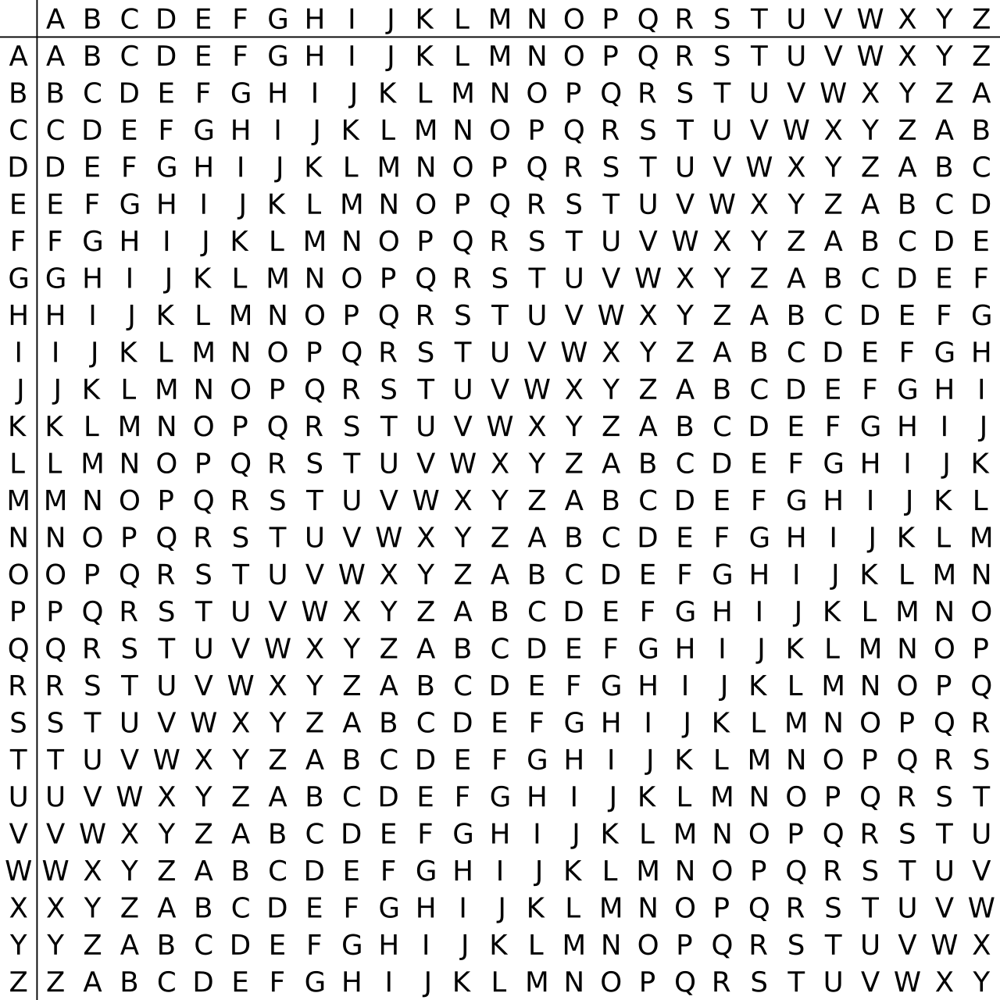

古典密码 / Classic cryptography¶
简述¶
古典密码(Classic cryptography) 在形式上可分成 移位密码(Shift Cipher) 和 替代密码(Substitution Cipher) 两类，其中替代密码又可分为单表替代和多表替代。有时则是两者的混合。其于历史中经常使用，但现代已经很少使用，大部分的已经不再使用了。

图：中文wiki-古典密码
移位密码¶
移位式密码，它们字母本身不变，但它们在消息中顺序是依照一个定义明确的项目改变。许多移位式密码是基于几何而设计的。一个简单的加密（也易被破解），可以将字母向右移1位。例如，明文"Hello my name is Alice."将变成"olleH ym eman si ecilA."。
栅栏密码 Rail-fence¶
栅栏密码(Rail-fence Cipher) 就是把要加密的明文分成N个一组，然后把每组的第1个字符组合，每组第2个字符组合...每组的第N(最后一个分组可能不足N个)个字符组合，最后把他们全部连接起来就是密文，这里以**key=2**栏栅栏加密为例。
明文：Squdgy fez, blank jimp crwth vox
分组：Sq ud gy f ez , bl an k ji mp c rw th v ox
将每组以前后顺序上下展开：
第一行 S u g e , b a k j m r t o
第二行 q d y f z l n i p c w h v x
得密文 Sug e,bakjm rt oqdyfz ln ipcwhvx
曲路密码 Curve¶
「曲路密码 Curve Cipher」 是一种按照双方约定密钥路径加解密的换位密码。
明文： The quick brown fox jumps over the lazy dog
填入5行7列表(事先约定填充的行列数)

加密的回路线(事先约定填充的行列数)

密文： gesfc inpho dtmwu qoury zejre hbxva lookT
列移位密码 Columnar Transposition¶
「列移位密码 Columnar Transposition Cipher」 一种比较简单，易于实现的换位密码，通过一个简单的规则将明文打乱混合成密文。
以明文 The quick brown fox jumps over the lazy dog，密钥 how are u 为例。
填入5行7列表(事先约定填充的行列数，如果明文不能填充完表格可以约定使用某个字母进行填充)

密钥： how are u
按how are u在字母表中的出现的先后顺序进行编号，我们就有a为1,e为2，h为3，o为4，r为5，u为6，w为7，所以先写出a列，其次e列，以此类推写出的结果便是密文：

密文： qoury inpho Tkool hbxva uwmtd cfseg erjez
替代密码¶
替代密码是字母（或是字母群）作有系统的代换，直到消息被替换成其它难以解读的字。
替换式密码亦有许多不同类型。如果每一个字母为一单元（或称元素）进行加密操作，就可以称之为 「简易替换密码 simple substitution cipher」 或 「单表加密 monoalphabetic cipher 」 另又称为 单字母替换加密 ; 以数个字母为一单元则称为 「多表加密 polyalphabetic cipher」 或 「表格式加密 polygraphic」。
阿特巴希密码 Atbash¶
埃特巴什码，密文表是明文表的逆转：
明文：the quick brown fox jumps over the lazy dog
密文：gsv jfrxp yildm ulc qfnkh levi gsv ozab wlt
猪圈密码 Pigpen¶
「猪圈密码 Pigpen cipher」 ，亦称 「共济会密码 Masonic cipher」 或 共济会员密码 Freemason's cipher」，是一种以格子为基础的简单 单表固定 替换密码。

圣堂武士密码 Templar¶
圣堂武士密码(Templar Cipher) 是共济会的猪圈密码的一个变种，一直被共济会圣殿骑士使用。

培根密码 Bacon¶
培根密码，又名**倍康尼密码(Bacon's cipher)** 是由法兰西斯·培根发明的一种隐写术。
加密时，明文中的每个字母都会转换成一组五个英文字母。其转换依靠下表：
a AAAAA g AABBA n ABBAA t BAABA
b AAAAB h AABBB o ABBAB u-v BAABB
c AAABA i-j ABAAA p ABBBA w BABAA
d AAABB k ABAAB q ABBBB x BABAB
e AABAA l ABABA r BAAAA y BABBA
f AABAB m ABABB s BAAAB z BABBB
这只是一款最常用的加密表，有另外一款将每种字母配以不同的字母组予以转换，即I与J、U与V皆有不同编号。
凯撒密码 Caesar¶
凯撒密码（或称恺撒加密、恺撒变换、变换加密、位移加密）是一种 单表代换 替换加密，明文中的所有字母都在字母表上向后（或向前）按照一个固定数目进行偏移后被替换成密文。例，当 偏移量 Key = 3 的时候，所有的字母A将被替换成D，B变成E，以此类推。

维吉尼亚密码 Vigenère Cipher¶
维吉尼亚密码 是在单一恺撒密码的基础上扩展出 多表代换 替换加密，根据密钥(当密钥长度小于明文长度时可以循环使用)来决定用哪一行的密表来进行替换，以此来对抗字频统计。

在一个凯撒密码中，字母表中的每一字母都会作一定的偏移，例如偏移量为3时，A就转换为了D、B转换为了E……而维吉尼亚密码则是由一些偏移量不同的凯撒密码组成。
为了生成密码，需要使用表格法。这一表格包括了26行字母表，每一行都由前一行向左偏移一位得到。具体使用哪一行字母表进行编译是基于密钥进行的，在过程中会不断地变换。
例如，假设明文为：
选择某一关键词并重复而得到密钥，如关键词为LEMON时，密钥为：
对于明文的第一个字母A，对应密钥的第一个字母L，于是使用表格中L行字母表进行加密，得到密文第一个字母L。类似地，明文第二个字母为T，在表格中使用对应的E行进行加密，得到密文第二个字母X。以此类推，可以得到：
解密的过程则与加密相反。例如：根据密钥第一个字母L所对应的L行字母表，发现密文第一个字母L位于A列，因而明文第一个字母为A。密钥第二个字母E对应E行字母表，而密文第二个字母X位于此行T列，因而明文第二个字母为T。以此类推便可得到明文。
用数字0-25代替字母A-Z，维吉尼亚密码的加密文法可以写成同余的形式：
$$
\begin{align*}
C_i & \equiv (P_i + K_i) \mod 26 \
\end{align*}
$$
解密方法则能写成：
$$
\begin{align*}
P_i & \equiv (C_i - K_i) \mod 26
\end{align*}
$$
小结¶
许多古典密码可单单经由密文而破解，所以它们容易受到 「唯密文攻击法 ciphertext-only attack，COA 」 攻击。
有些古典密码（像是凯撒密码）的密钥个数有限，所以这类密码可以使用 暴力破解 尝试所有的密钥。
替代式密码有比较大的密钥数，但是容易被频率分析，因为每个密码字母各代表了一个明文字母。
多字母替代式密码，像是维吉尼亚密码使用多个替换防止了简单的频率分析，然而，更先进的技术卡西斯基试验就可用来破解这类密码。
古典密码的常见变换在上述介绍的几种常见密码中已经体现，所以其他类似变换的古典密码就不再赘述，总的来说，在算力和统计学的双双加持下，古典密码再也不能满足安全应用，同时在CTF中也不会作为核心考点出现，同编码一样，结合搜索引擎去解决对应问题即可，如果解决不了——题有问题。